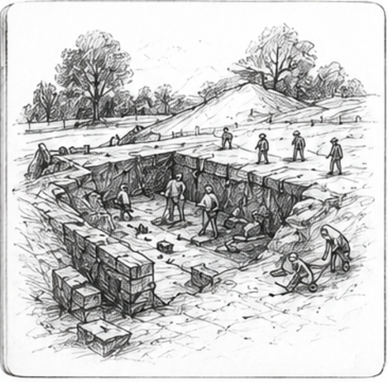
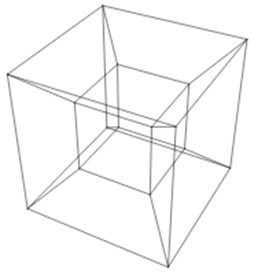
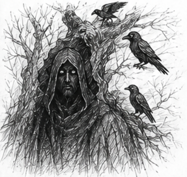
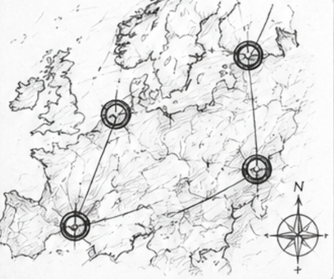
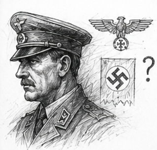
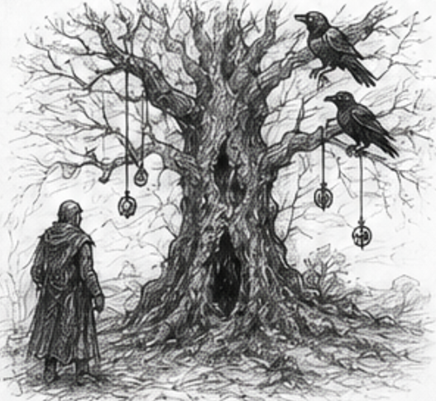
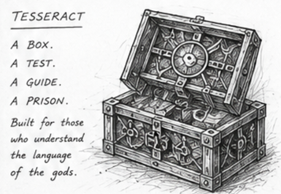
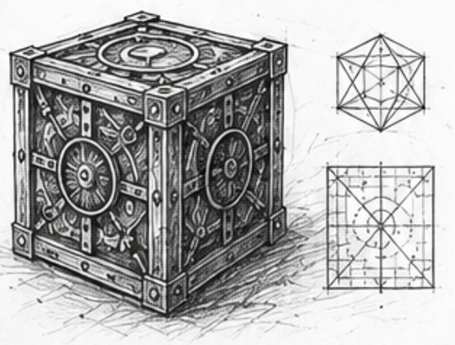
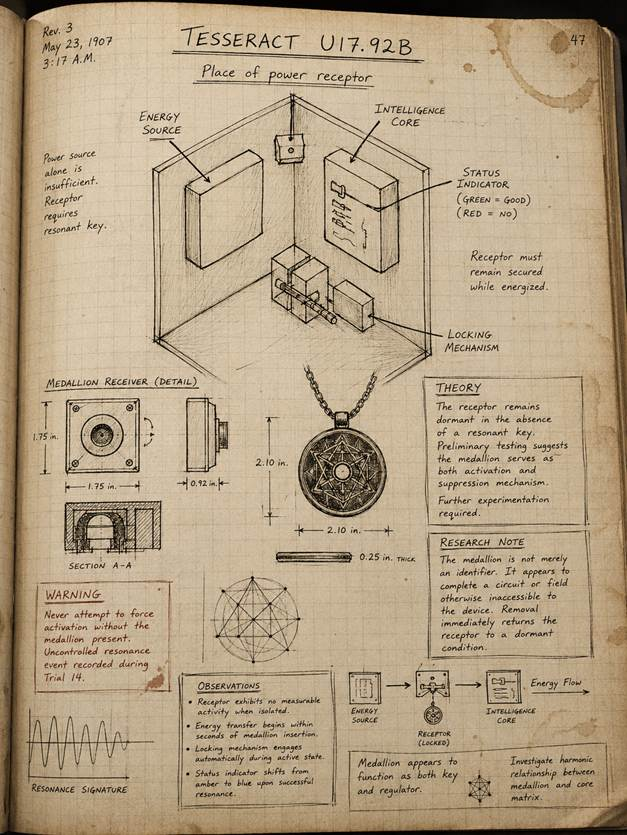

Journal of Edmund B. Brown
12 March
I grew up with a name,
really two names, that were already famous.
My great-grandfather is
remembered in schoolbooks and documentaries as the man who uncovered the great
ship burial in the east of England. A quiet man. A farm laborer turned archaeologist. The sort of story people like to tell
themselves about discovery.
What they never mention
is what he left behind.
His personal notes were
never fully published. I have spent years reading them in fragments. Sketches
that were never included in official reports. Observations crossed out. Entire
pages missing.
He found something more
than a burial mound.
I am certain of it.
4 April
I entered archaeology
because I believed I was continuing his work.
That is what I told
myself.
But the truth is
simpler.
I wanted to finish what
he could not.
Or would not.

18 September
His reputation is
carefully controlled.
Too carefully.
Every archive produces
the same narrative: discovery, excavation, conclusion.
Yet the
private correspondence tells a different story.
Requests to halt certain
lines of inquiry.
Visits from unnamed
officials.
Sudden changes in access
permissions.
Something was being
contained.
Not revealed.
Contained.
7 May
I was invited to a
private gathering today.
No formal invitation
arrived. Only a name passed through three intermediaries and a time.
The meeting took place
in a room beneath an old London institution that no longer appears on public
maps.
They call themselves Sol
Invictus.
At first
I assumed it was a historical society. Roman reenactment enthusiasts, perhaps.
Academic collectors of obscure military traditions.
I was mistaken.
They speak of Rome not
as history, but as inheritance.
One of them told me,
almost casually, that empires do not die. They change hands.
14 September
I have now been granted
access to their records.
They span centuries.
Roman fragments.
Monastic copies. Viking reinterpretations. Norman correspondences. Renaissance
transcriptions. Victorian private collections.
Always the same pattern
beneath different language.
They are searching for
something.
They call them:
The Sigils of Wayland.
Three objects. Always
three.
No one agrees on what
they are.
Only that
they mattered.

March 3
The name itself is not fanciful. A tesseract
is a genuine mathematical construct—a four-dimensional analogue of the cube. As
a square is bounded by four edges, and a cube by six square faces,
so the tesseract is said to possess eight cubic cells, each meeting at
right angles in a dimension beyond ordinary perception. It cannot truly exist
in our world, only be described.
Curiously, the oldest legends speak not merely of
the geometry, but of an object bearing the same name.
These accounts describe a small cube whose true
form extends beyond the three dimensions we can observe. Its visible shape is
said to be only a shadow of a greater whole, much as
the shadow of a cube upon a wall is but a flattened image of the object itself.
If there is even a grain of truth to these
stories, then the "Tesseract" was named not for its appearance, but
for what it represented: an artifact existing partly beyond the limits of our
perception.
An absurd notion...
...and yet I find myself unable to dismiss it.
2 February
There is a pattern in
the records that cannot be dismissed.
When the Sigils are
present in a region, power shifts.
Celtic Britain.
Expansion of influence.
Roman occupation. Sudden
consolidation.
Northern migrations.
Emergence of new kingdoms.
Norman conquest.
Reordering of Europe.
These are not separate
events.
They are phases.
Possession.
Transformation.
Loss.
Collapse.
Again and again.
11 November
I do not sleep well
anymore.
The same image returns
each night.
A great ash tree.
A figure beneath it.
One eye.
Ravens circling above.
At first
I believed it to be symbolic residue from reading too many Norse texts.
Now I am less certain.
The symbols appear too
frequently in unrelated sources.
Too consistently.

29 October
The breakthrough came
from Spain.
A series of fragmented
correspondences between a royal archivist and a British antiquarian.
Neither understood what
they were describing.
Both referred to three
recovered artifacts that had passed through multiple royal collections over
centuries.
I recognized them
immediately.
Before I ever saw them.
The Sigils.
They exist.
All three.
But more, someone or
some group is already aware of them and seems to be deliberately making it
difficult to find them. Every step toward finding the sigils has been blocked
in obfuscation and enigma, and I have the unnerving feeling I’m being watched,
even followed.
2 November
They are in my
possession.
I had expected
revelation.
Instead I feel something closer to recognition.
As if they were not found, but returned.
Their presence is
unsettling.
Not because they are
powerful.
But because they feel
aware.
5 November
I have begun to suspect
the Sigils do not grant power.
They direct it.
They shape
it.
Civilizations that held
them rose with unnatural speed.
Civilizations that lost
them declined with equal precision.
History is not random.
It is guided.
In striving to find how
they work, I believe those following me may guard that secret. In my research,
I have uncovered whispers in the historical records that point to these
guardians in the monasteries and cloisters from Spain to Northern Europe.

17 August
I have been formally
inducted into the inner circle of Sol Invictus.
The older members speak
of tradition.
Ceremony.
Heritage.
They do not understand
what they are sitting upon.
The
Society is not preserving
history.
It is inheriting a
mechanism.
A system of influence
that has operated for millennia.
3 November
I have begun to notice greater interference.
Whenever I approach a
critical archive, it is suddenly restricted.
Whenever I trace a
promising manuscript, it disappears.
Whenever I close in on
an origin point, access is quietly withdrawn.
This is not coincidence.
It is resistance.
Something is actively
countering us.
Not Sol Invictus. Something
else.
Older. Quieter. More
disciplined.
28 August
A letter surfaced from
my great-grandfather’s papers.
No signature.
Only a warning advising him to abandon certain lines of inquiry.
He complied.
That fact alone is
disturbing.
He was not a man easily
deterred.
Whoever contacted him
knew precisely how to apply pressure.
I believe we are still
being observed.
Still being guided away
from truths we are not meant to see.
15 November
I have begun compiling a
broader theory of historical influence.
It is no longer enough
to view the Sigils as relics.
They are instruments.
Their presence
correlates with sudden rises in political extremism, territorial expansion, and
cultural consolidation.
One case in particular facinates me.
An Austrian art student
in the early twentieth century.
His trajectory is too
abrupt. Too improbable.
The archival gaps
surrounding his early years are significant.
I believe he may have
encountered one of the Sigils.
If so, it would explain
his rise.
It would also explain why all traces of it
vanished after the war. 
19 November
Post-war recovery
records are inconsistent.
Artifacts moved between
institutions without explanation.
Some collections sealed
indefinitely.
Others reassigned under
classified authority.
I suspect Britain
reclaimed the Sigils.
Or what remained of
them.
And I suspect they were
hidden again immediately.
By the same unseen hand
that has opposed us for centuries.
I have uncovered at
least a hint of their identities. A group arose early in Britain that clashed
with the Roman military. They seemed to have druidic origins but quickly hid
under the mantle of early Christianity. They thought they were protecting the
world by hiding the secret of the Sigils – FOOLS! – It is the power of the
Sigils that could grant the might to finally stop the terrors of this world.
With this power, we could control and shape the world to be a better life for those worthy of it.
26 November
The Sigils alone are
incomplete.
Every reference points toward four locations.
The runes must direct me
near, but I am yet to decode thm.
Four places of
sacrifice.
Places of kingship.
Places associated with
Odin.
Sites where blood was
shed deliberately to secure favor from higher powers.
These are not symbolic
sites.
They are functional
ones.
Only by combining them with these locations does
their full effect manifest. 
9 December
The Tesseract is not
myth.
It is structure.
Older accounts describe
it inconsistently:
A mechanism that reveals
paths only to those who understand its language.
I have stopped treating
these descriptions as metaphor.
I intend to build it.

18 January
Construction has begun.
One internal chamber,
four places of power.
Each requiring
a distinct form of knowledge to access.
Roman pattern
recognition.
Saxon symbolism.
Norse myth
interpretation.
Modern historical
synthesis.
The design is becoming
elegant.
Almost inevitable.
As if I am not inventing it,
but remembering it. 

24 January
Sol Invictus has
accepted my proposal.
The Tesseract will
become our instrument.
I will keep one secret
even from them – I will keep the medallion locked, with my Grandfather’s
name as the password.
Even that not being
enough, to keep the full power of the sigils to myself, I will use one of the enemy’s
own codes to wrap the password under another layer of protection.
A controlled test of
worthiness.
Only those who can
interpret the layered history of the Sigils will proceed.
Only I will succeed. All
others will fail.
That is intentional.
11 January
I have been appointed
Potentate of Sol Invictus.
A formal recognition of
what was already true.
The
Society believes it is
entering a new era.
It is correct.
It simply does not
understand what kind of era.
24 January
The Tesseract is
complete.
It will guide those worthy enough to follow the Sigils.
It will conceal itself
from those who are not.
And it will lead us
north.
To the places where Odin
once demanded obedience.
Four locations.
Four locks.
If I am correct, the
final truth lies beyond them.
If I am wrong, then
history itself is meaningless.
Either way, I intend to
proceed.
ᛞᛋᛈᛓᛟᛉᚷᛟᛃ ᚹᛈᛋᚢᛟᛚᛃᛈᚱ
�The first key
belongs at the ancient cathedral overlooking
the western sea. Odin was never content to remain in Asgard. He wandered the
world in disguise, seeking wisdom wherever it could be found. For centuries,
ships departed from these waters toward distant lands and unknown horizons.
Every voyage begins with a question, and every seeker who leaves the safety of
harbor follows the path of the Wanderer.
ᛏᛃᛝᛗᛞᛚᛈᚱ ᚷᚱᛈᚹᛝᛟᛃ
�The second key
belongs where the great river of ice descends from the mountains. Odin
sacrificed much in his pursuit of knowledge, but his greatest desire was always
to understand what had come before and what was yet to come. The glacier
preserves the past beneath its frozen surface. Snow falls, centuries pass, and
still the ice remembers. No place better reflects
the wisdom Odin sought from the oldest powers of the world.
ᚾᚲᛚᛃᛈᚱ ᛓᛝᚱᚱᛈᚷᛟ
The third key belongs in
the lonely settlement high among the mountains. Here the traveler climbs above
forests and valleys toward the clouds. It was upon Yggdrasil, the World Tree,
that Odin hung for nine days and nine nights, sacrificing himself to gain the
secret of the runes. The ascent toward the mountains mirrors that sacrifice.
Wisdom is never found on easy roads.
ᛃᛝᛞᛒᚲ ᛏᛃᛝᛚᚷᛟ
The final key belongs at
the bridge joining island and mainland. The Bifr�st,
the rainbow bridge of the gods, connected the realm of mortals to the realm of
the divine. Every crossing is a passage from one world into another. Odin
understood that true knowledge lies beyond familiar boundaries. To cross the
bridge is to leave certainty behind and step into the unknown.
July 18, An
Unwelcome Discovery
Something most troubling
has occurred.
Upon returning to my
study this evening, I discovered signs that someone had entered while I was
away. The locks had been disturbed, my notes had been searched, and most
alarming of all � the tesseract was missing.
Whoever took it clearly
knew what they were searching for. This was not the work of a common thief.
They ignored the valuables around them and went directly for the artifact.
Fortunately, I have
prepared for such an event. My associates are already following every lead, and
I am confident they will recover the tesseract before long. Those who have
taken it do not understand what they possess.
The sigils are far older
than any one person, and their secrets belong to those with the knowledge and
discipline to wield them.
I expect this
interruption will be resolved quickly.
July 24
The Trail Grows Cold
I fear I have
underestimated my adversary.
My associates have
searched every location connected to the disappearance, yet the thieves have
vanished. They were careful. Too careful. They knew enough to hide their
movements, but not enough to understand the significance of what they stole.
At first, I suspected
the Brotherhood of St. Brendan had finally emerged from the shadows. But this
does not fit their methods. The Brotherhood protects secrets � they do
not steal from those who seek them.
No. This is someone new.
Someone else has
discovered the trail of the sigils. Someone who has been watching, waiting, and
following the clues I have uncovered.
Whoever they are, they
should understand this: the path they have chosen is dangerous. The secrets
buried with the sigils have remained hidden for centuries for a reason.
If they believe they can
simply take what others have fought to protect, they will soon learn that some
discoveries come with a terrible price.
I will find them.
And when I do, the
tesseract will return to its rightful place.
July 31 The Secret of
St. Brendan
My search through the
Brotherhood's records has revealed a truth I had not anticipated.
The sigils were never
the complete artifact.
The Brotherhood of St.
Brendan understood the danger of the power contained within them. Rather than
destroy the knowledge, they separated it from the sigils themselves and hid the
secret of how their full power could be harnessed.
There was a fourth
artifact � one kept with the sigils, yet hidden
from those who would seek only power.
The Sigil of St.
Brendan.
The Brotherhood created
a method to conceal its message, ensuring that only those who possessed
patience, wisdom, and respect for the past could uncover its meaning.
While my associates
continue their efforts to recover the stolen sigils, I have devoted myself to
deciphering this final artifact. If the Brotherhood truly hid the key to
awakening the sigils' full potential, then the answer must be hidden within its
design.
The
knowledge exists. I am
certain of it.
The question is not
whether the secret can be found.
The question is whether
I will find it before someone else does.